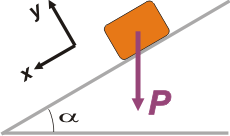
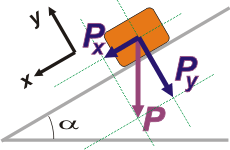
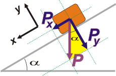
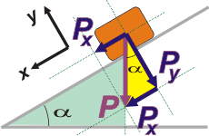

NO ME SALEN
EJERCICIOS RESUELTOS Y APUNTES DE FÍSICA Y BIOFÍSICA DEL CBC
UN POCO DE TRIGONOMETRÍA
El mecánica la trigonometría suele utilizarse meramente para hallar valores de las componentes de un vector (una fuerza, una velocidad, una aceleración, etcétera) y suele traer dificultades a los iniciados. En esta breve lección voy a referirme a los errores más comunes de los estudiantes.
Supongamos el caso de un objeto sobre un plano inclinado un ángulo α en el que se necesitan conocer los valores de las componentes (paralela y perpendicular al plano) del peso, P, que como siempre, es vertical. |
|

|
| |
|  |
Podrían elegirse dos direcciones distintas para el Sistema de Referencia (SR)... y aún así el ejercicio saldría (tal vez con un poco más de dificultad, pero sale igual).
El SR más cómodo generalmente es el que hace coincidir uno de los ejes (usualmente llamado x) con la dirección (y si es posible el sentido) de la aceleración. |
|
|
El error más común entre los estudiantes consiste en decir que la componente x del peso equivale a Px = P . cos α... Supongo que tal error se debe a que cuando aprendieron trigonometría no repararon en que lo que estaban aprendiendo no era un resultado sino un procedimiento. Veamos qué pasa acá.
|
 |
 |
Para descomponer cualquier vector en dos direcciones ortogonales lo que se hace es dibujar rectas paralelas a los ejes del SR por ambos extremos del vector.
Entre las paralelas se forma un rectángulo, que tiene sus lados opuestos iguales (geometría de 4to. grado de la escuela primaria). |
|
| Y ahí aparecen las componentes del peso. Cada una recibe el nombre del eje del cual es paralela. |
|  |
Ahora podés olvidarte del peso, P, y trabajar con sus reemplazantes (podrás notar fácilmente que Px + Py = P, vectorialmente hablando, y si no lo notás... tenés ese asunto explicado acá).
Para saber qué relación existe entre cada componente y el peso, tenés que prestar atención a cualquiera de los triángulos que se forman dentro del rectángulo cuya diagonal es el peso. |
|
| Por tradición usaremos el que te voy a pintar de amarillo... pero también podríamos usar el otro. Esta parte también es una fuente de errores comunes entre los estudiantes. Prestá atención: |
|  |
No dudarás que se trata de un triángulo rectángulo (o sea: que posee un angulo de 90 grados... que es el que está abajo a la derecha, ya que coincide con los lados del rectángulo de las paralelas). Ya sé que soy demasiado puntilloso, pero bancátela... seguime.
Otro error bastante asiduo entre los estudiantes consiste en no identificar correctamente que el ángulo superior de ese triángulo vuelve a ser α. |
|
| No hay una forma única de demostrar esa igualdad. Pero me conformo si lo hallás intuitivamente usando el métido de Carrol, que te enseño en este breve artículo. Ahora, que si sos un nerd y querés demostraciones geométricas te recomiendo recordar que los ángulos interiores de todo triángulo siempre suman 180 grados. (Te sombreé otro triángulo para ayudarte). |
|  |
En ese triángulo rectángulo (el amarillo fuerte, el chiquito) la hipotenusa no es otro que P. El cateto adyacente a α es Py y el cateto opuesto a α es Px (en realidad no es Px sino un segmento del mismo largo que Px , o esa, es lo mismo).
Ahora, en ese triángulo rectángulo aplicás las relaciones trigonométricas del ángulo α... que seguramente recordás: |
|
sen α = cateto opuesto sobre hipotenusa
cos α = cateto adyacente sobre hipotenusa
tg α = cateto opuesto sobre cateto adyacente
Si reemplazás los nombres geométricos por las magnitudes físicas, llegás a:
Px = P . sen α
Py = P . cos α
No tenés que tomar esto como una verdad inamobible. Fijate que el enunciado del ejercicio podría haber dicho: "un cuerpo apoyado en un plano inclinado respecto a la vertical un ángulo α". ¡Y ahí el resultado habría sido distinto al que llegamos nosotros!
O también podrías haber elegido los nombres de los ejes invertidos... o cualquier otra circunstancia particular...
Moraleja... hasta que no tengas 2.000 horas de vuelo y seas un experto piloto internacional, tenés que razonar todos los pasos que avanzás en la resolución de un ejercicio.
|
| Algunos derechos reservados.
Se permite su reproducción citando la fuente. Última actualización sep-11. Buenos Aires, Argentina. |
|
| | | | |
| | | | |
| | | | |
|